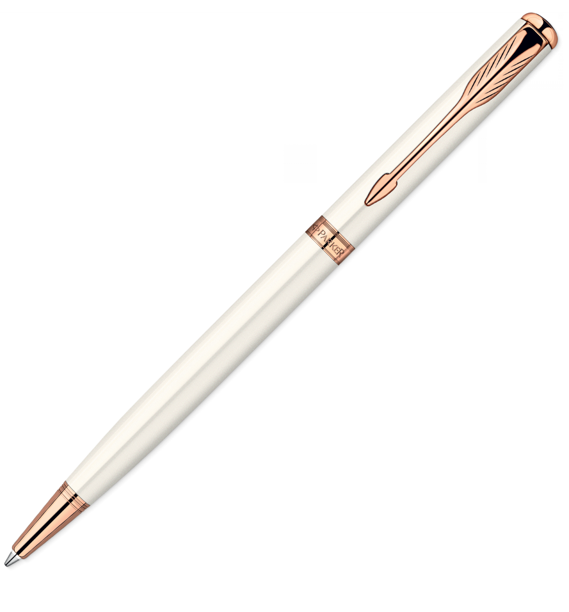
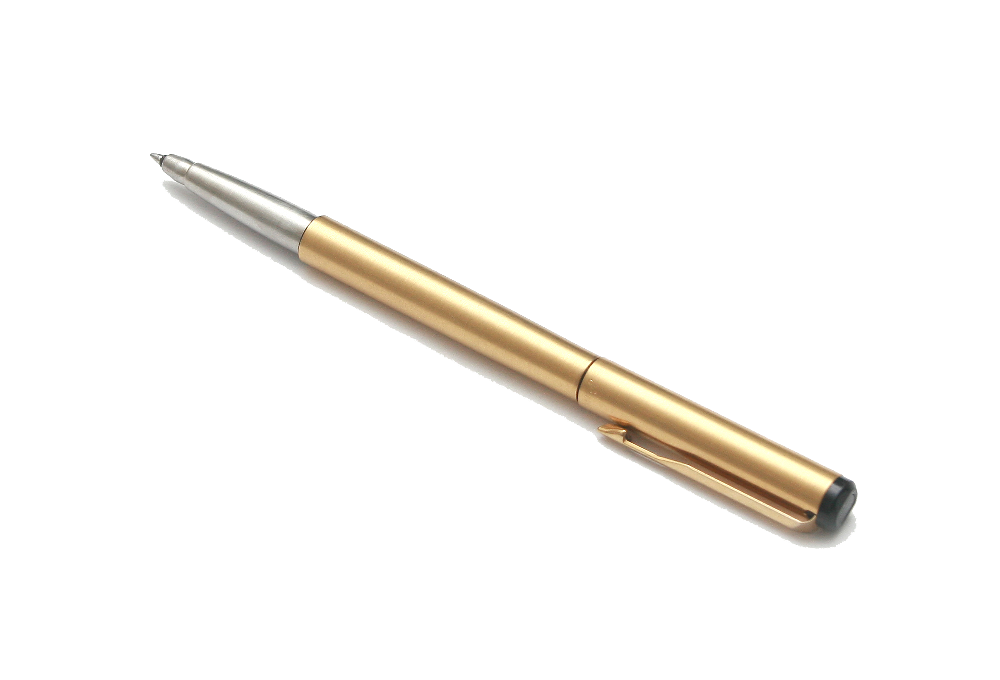
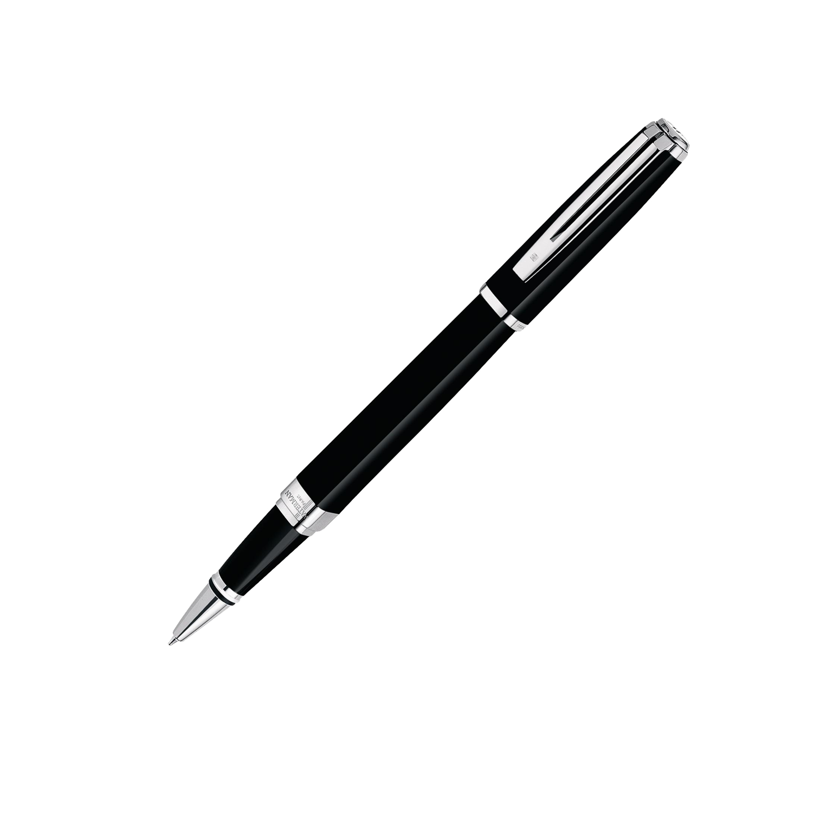

Elegancja, ponadczasowość, pewność siebie - Sonnet to kwintesencja kunsztu marki Parker i symbol nieprzemijalnej elegancji stworzonej po to, by pisanie stało się jedynym w swoim rodzaju doświadczeniem. To klasyczny produkt, zapoczątkowany w 1993 r., wyrafinowany, piękny i stosowny na każdą okazję. Adresowany do profesjonalistów, ludzi sukcesu oraz wszystkich tych, którzy pragną otaczać się wyrafinowanymi przedmiotami. Długopis jest niezwykle wygodny i pozwoli wprowadzić element spontaniczności w oficjalnych sytuacjach, a niebieski tusz QuinkFlow zapewni idealną linię pisania w każdych okolicznościach.

Jotter Premium West End to jeden z najpopularniejszych produktów wspomnianej marki. Ma on korpus wykonany ze stali nierdzewnej, który pomalowano na złoty kolor.
Przez to powyższy model niezwykle luksusowo się prezentuje. Jego końcówka jest cienka i precyzyjna, a to gwarantuje komfortowe pisanie.
Produkt został wyposażony w przyciskowy mechanizm wysuwania wkładu. Dzięki takiemu rozwiązaniu jego wymiana nie jest kłopotliwa.
Ponieważ długopis jest zapakowany w ozdobne pudełko, można podarować go w prezencie bliskiej osobie.
Z pewnością zrobi on duże wrażenie na osobach przywiązujących dużą wagę do wyglądu artykułów piśmienniczych.
Jotter Premium West End to jeden z najpopularniejszych produktów wspomnianej marki. Ma on korpus wykonany ze stali nierdzewnej, który pomalowano na złoty kolor.
Przez to powyższy model niezwykle luksusowo się prezentuje. Jego końcówka jest cienka i precyzyjna, a to gwarantuje komfortowe pisanie.
Produkt został wyposażony w przyciskowy mechanizm wysuwania wkładu. Dzięki takiemu rozwiązaniu jego wymiana nie jest kłopotliwa.
Ponieważ długopis jest zapakowany w ozdobne pudełko, można podarować go w prezencie bliskiej osobie.
Z pewnością zrobi on duże wrażenie na osobach przywiązujących dużą wagę do wyglądu artykułów piśmienniczych.

Długopis automatyczny Zenith długopis automatyczny o korpusie z błyszczącego tworzywa sztucznego. Obudowa dzielona w 1/3 wysokości (górna część ośmiokątna). Obie części korpusu oddzielone mosiężno-nikowaną obrączką. Metalowe elementy dolnej części korpusu trwale związane z elementami plastikowymi. Wymienny wkład wielkopojemny z dokumentalnym tuszem w kolorze niebieskim gwarantujący trwałość zapisu. Dostęny w kolorach: czarnym, granatowym, niebieskim, bordowym, czerwonym, zielonym, żółtym.

Wyjątkowy długopis BIC. Długopis waży zaledwie 8 gram, dzięki czemu łatwo go trzymać oraz bardzo lekko i przyjemnie się go prowadzi. Pomimo lekkiej, plastikowej obudowy, wyjątkowy design w stylu retro i pozłacane elementy sprawiają, że mamy poczucie użytkowania długopisu z wyższej półki. Długopis ten jest dostępny w wyjątkowo cudownych, żywych kolorach. Zdecydowanie będzie się wyróżniać w Twoim piórniku, czy na biurku i zawsze go odnajdziesz, bo rzuca się w oczy!

Długopis Parker Jotter CT. Prezentuje się on niezwykle elegancko. Produkt ma stalowy korpus, dlatego wykazuje dużą odporność na uszkodzenia mechaniczne. Wyposażono go w cienką i precyzyjną końcówkę, która gwarantuje wyjątkowy komfort pisania, bez względu na rodzaj papieru. Mimo materiału wykonania, model Jotter CT jest lekki i płynnie przesuwa się po kartce. Poza tym bardzo dobrze leży on w dłoni i nawet podczas wielogodzinnego pisania nie powoduje jej zmęczenia. Na korpusie produktu znajdują się efektowne, chromowane elementy, które podnoszą jego estetykę. Do zestawu dołączone jest specjalne, ozdobne pudełko.